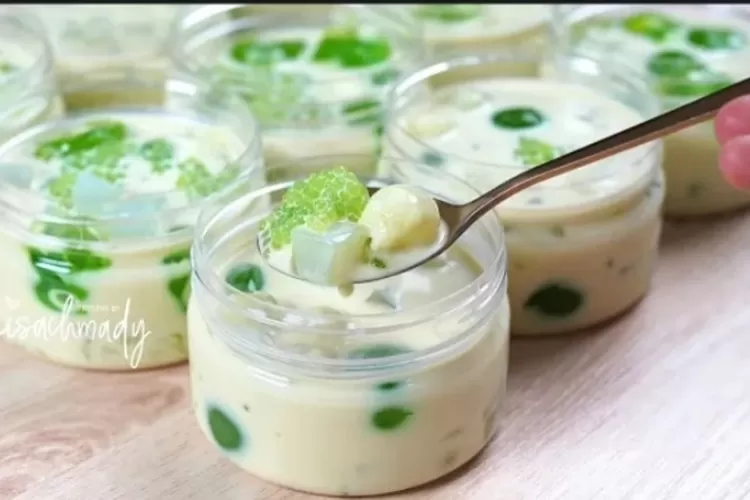

Melon Sago

Description
The melon sago is a dessert I found recently that I fell in love with.
I like to think of this like a creamy melon cold soup. This dessert is also very
easy to make and requires little effort for a delictable treat. If you love
honeydew, this is a perfect summer (or whenever!) dessert.
Ingredients
- Ready to eat Honeydew
- Sago/Tapioca pearls
- Nata de coco
- Coconut pudding
- Melon milk (I reccomend Binggrae brand!)
- Evaporated milk
- Condensed milk
Steps
- To start, we are going to boil hot water to start cooking the Sago.
To do this we put the desired amount of sago into boiling water and let
it cook for 10-20 minutes or until the pearls do not have a white center
anymore.
- While the sago is cooking, cut the honeydew into bite size pieces and put into a bowl.
- Remove the liquids from the Nata de coco and pour the jellies into the bowl.
- When the sago is done cooking, run under cold water until the sago is cold and
strain and put into our bowl.
- Slice or break apart the coconut pudding and put into the bowl.
- Pour all the milks into the bowl with the desired amount of each.
- Put ice in serving bowl or into the main bowl and enjoy!